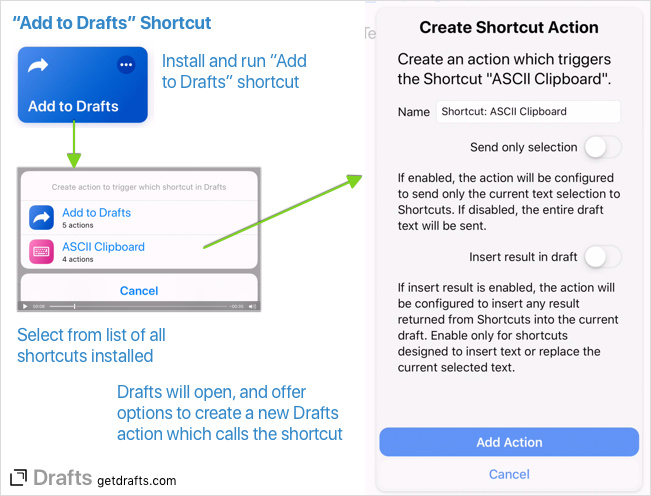

Apple’s Shortcuts app unlocks a lot of powerful automation capabilities on iOS. It mostly has the same integration options with Drafts that it’s predecessor Workflow had, but is missing one handy feature - the “Add to Drafts” option to create a Drafts action to call a shortcut. We’ve re-enabled that, with a few new options, using a sample shortcut available below.
Drafts actions can call shortcuts in the Shortcuts app using the Run Shortcut action step. This step can be added to any action, and manually configured by adding the name of an installed Shortcut. Using the step you can create a greater level of customization of the text sent to Shortcuts and what is done with anything the shortcut returns. In practice, most users call shortcuts for one of two cases: Sending the text of the current draft as input, or sending selected text to be processed and returned to Drafts.
Drafts includes a method to quickly and easily add an action configured to call a shortcut in the Shortcuts app for either of these common cases. To get started:
- install the Add to Drafts shortcut.
- In the Shortcuts app, run the “Add to Drafts” shortcut.
- A list of your installed Shortcuts will be presented. Select the one you to use from Drafts.
- Drafts will open, and offer options to configure this new action, as follows:
- Name: A name for the action, defaults to “Shortcut: Shortcut name”
- Send only selection: If enabled, the action will be configured to send only the selected text to Shortcuts. If disabled, the action will send the entire text of the current draft to Shortcuts. Useful if you have a shortcut that works on text snippets - for example triggering a web search or changing the text in some way and returning it.
- Insert result in draft: If enabled, the action will be configured to replace the current text selection (or insert a cursor position) the result text returned from Shortcuts. Only enable this option if the shortcut returns text. Useful for cases where, for example, the shortcut grabs some text from the web or a file and you want to insert that result text.
- Tap the “Add Action” button. You will be prompted to select a Drafts Action Group to hold the new action.
- That’s it. Your new action will be available in the Action Group you selected. After creating it, you may edit it and make any customization you might desire as any action.

URL Scheme Details
The “Add to Drafts” example Shortcut takes advantage of a new URL scheme in Drafts 5.6 or above. If you wish to create your own Shortcuts to utilize this URL, the format is below:
drafts://create_shortcut_action?name=ShortcutName
Calling this URL will open Drafts to the configuration prompt shown above.